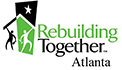

About Us
Preserve affordable housing by bringing volunteers and communities together to rehabilitate the homes of low-income homeowners.
Operating in more than 865 cities and towns in all 50 states, Rebuilding Together rehabilitated more than 8,900 homes and non-profit facilities in 2006 with the volunteer power of 267,000 men, women and youth.
Assistance is focused on the low-income elderly, disabled and veteran homeowners that live in single family homes. Our method of assistance focuses on addressing all of the issues related to the home including but not limited to safety, comfort, health, energy efficiency and independence. Our primary objective is to restore safe and healthy living conditions through home repairs which have an immediate and long lasting impact. The Safe and Healthy Homes program has two signature initiatives: Safe at Home and Green Housing.
Our Safe at Home Initiative targets safety upgrades and modifications needed to allow the homeowner to age in place safely, comfortably and independently.
The Green Housing Initiative provides energy efficient retrofits to allow the homeowner to save money on their electric and water bill and help conserve our precious environmental resources. Assistance is provided at no cost to the homeowner.